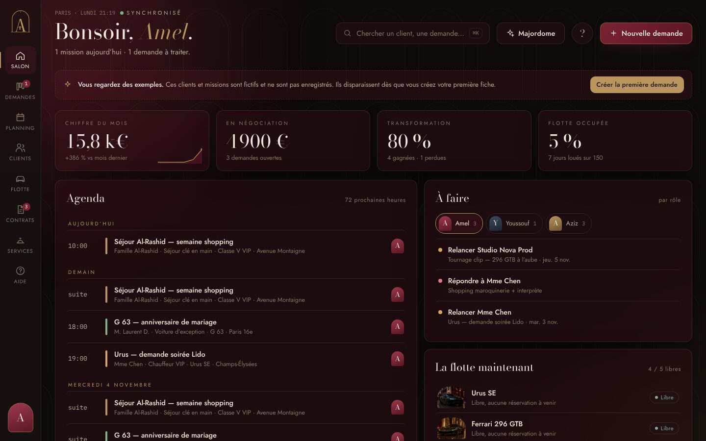
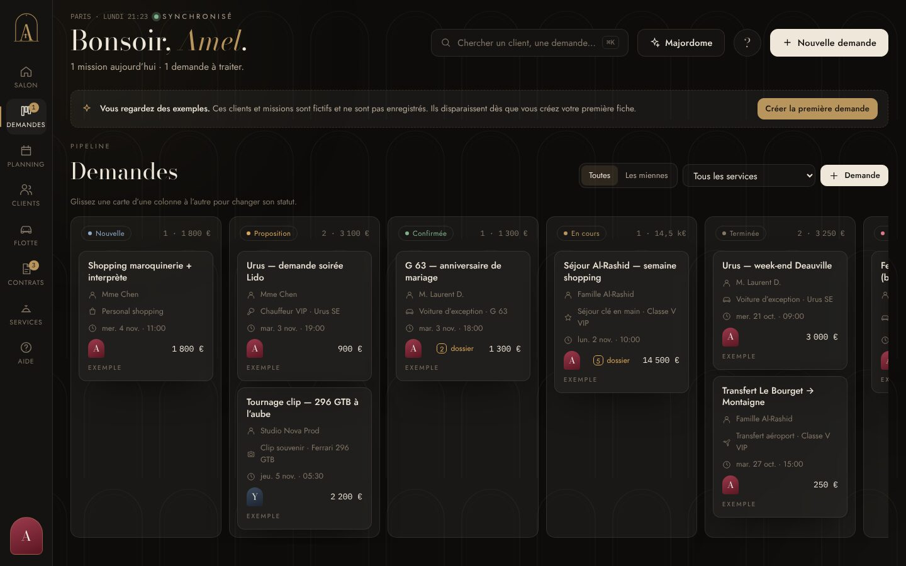
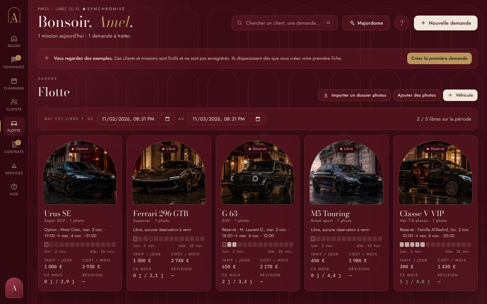
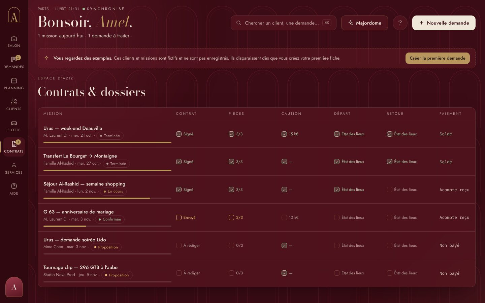
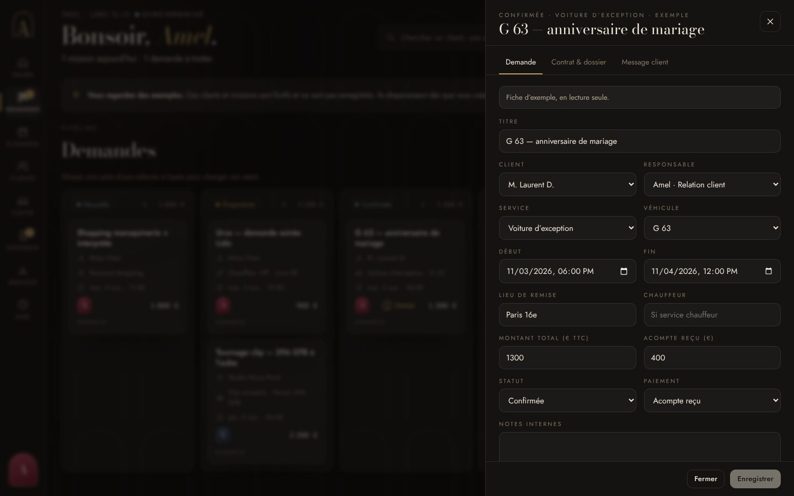
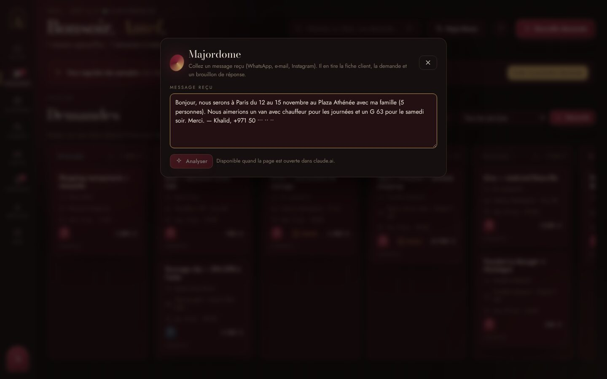
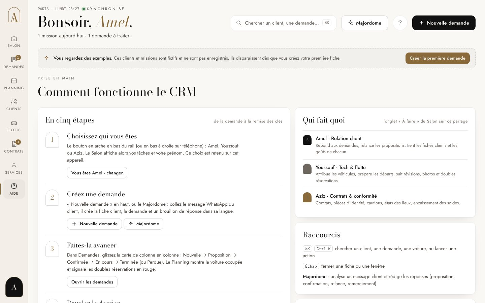

<title>Amane Prise en main</title>
<meta name="claude:viewport-fit-sides" content="cover">
<link rel="preconnect" href="https://fonts.googleapis.com"><link rel="preconnect" href="https://fonts.gstatic.com" crossorigin>
<link rel="stylesheet" href="https://fonts.googleapis.com/css2?family=Bodoni+Moda:ital,opsz,wght@0,6..96,400;0,6..96,500;1,6..96,400&family=Jost:wght@300;400;500&display=swap">
<style>
/* Un carnet de bord aux couleurs de la charte : bordeaux Velours Garnier en maître (motif Arcades ton sur ton), pierre pour les sections de lecture, noir laqué en pied de page, or en filets. Thème unique assumé. */
:root{
  --noir:#5B1622; --nuit:#3B0C15; --ombre:#4A1019; --laque:#15110F; --pierre:#EFE7DA; --creme:#F6F1E8; --encre:#15110F;
  --gris:rgba(239,231,218,.58); --gris-c:rgba(239,231,218,.8); --gris-s:#5E4A43; --or:#B8955C; --or-c:#C9A770; --or-s:#86683A; --bx:#7A2232;
  --l-c:rgba(184,149,92,.26); --l-s:rgba(91,22,34,.16);
  --display:'Bodoni Moda',"Didot","Bodoni 72",Georgia,serif;
  --body:'Jost',"Futura","Avenir Next","Helvetica Neue",Arial,sans-serif;
  color-scheme:dark;
}
*{box-sizing:border-box}
body{margin:0;background:var(--noir);color:var(--pierre);font-family:var(--body);font-weight:300;font-size:16.5px;line-height:1.7;-webkit-font-smoothing:antialiased}
body::before{content:"";position:fixed;inset:0 0 auto;height:env(safe-area-inset-top,0px);z-index:10;background:var(--nuit)}
.arc{position:relative;isolation:isolate}
.arc::before{content:"";position:absolute;inset:0;z-index:-1;background:url() center top/360px;opacity:.38;pointer-events:none}
h1,h2,h3{font-family:var(--display);font-weight:400;line-height:1.1;text-wrap:balance;margin:0}
em{font-family:var(--display);font-style:italic;color:var(--or-c)}
a{color:var(--or-c);text-underline-offset:3px}
p{margin:0}
.wrap{max-width:1080px;margin:0 auto;padding-left:max(20px,env(safe-area-inset-left,0px));padding-right:max(20px,env(safe-area-inset-right,0px))}
.label{display:inline-flex;align-items:center;gap:14px;font-size:11px;font-weight:400;letter-spacing:.3em;text-transform:uppercase;color:var(--or)}
.label::before{content:"";width:28px;height:1px;background:currentColor;opacity:.7}
section{padding-block:clamp(64px,9vw,110px)}
.light{background:var(--pierre);color:var(--encre)}
.lie{background:var(--nuit)}
.light .label{color:var(--or-s)}
.light em{color:var(--or-s)}
.light a{color:#6E4F22}
.sec-h{display:grid;gap:18px;margin-bottom:clamp(36px,5vw,56px);max-width:44rem}
.sec-h h2{font-size:clamp(32px,4.2vw,54px)}
.sec-h p{color:var(--gris-c);max-width:58ch}
.light .sec-h p{color:var(--gris-s)}

/* Nav */
nav.top{position:sticky;top:env(safe-area-inset-top,0px);z-index:9;background:rgba(59,12,21,.95);backdrop-filter:blur(12px);-webkit-backdrop-filter:blur(12px);border-bottom:1px solid var(--l-c)}
nav.top .wrap{display:flex;align-items:center;gap:24px;height:62px;overflow-x:auto;scrollbar-width:none}
nav.top .wrap::-webkit-scrollbar{display:none}
nav.top .brand{display:flex;align-items:center;gap:12px;color:var(--pierre);text-decoration:none;font-family:'Bodoni Moda',Georgia,serif;font-size:16px;letter-spacing:.32em;flex:0 0 auto}
nav.top .brand svg{width:18px;height:auto;color:var(--or-c)}
nav.top .links{display:flex;gap:22px;margin-left:auto;flex:0 0 auto}
nav.top .links a{color:var(--gris-c);text-decoration:none;font-size:11px;letter-spacing:.24em;text-transform:uppercase;white-space:nowrap}
nav.top .links a:hover{color:var(--pierre)}

/* Ouverture */
.hero{padding-block:clamp(72px,11vw,140px) clamp(56px,7vw,90px)}
.hero h1{font-size:clamp(44px,7vw,96px);margin:22px 0 26px;max-width:12ch}
.hero .lead{font-size:clamp(17px,1.5vw,20px);color:var(--gris-c);max-width:54ch}
.links2{display:grid;grid-template-columns:repeat(2,minmax(0,1fr));gap:16px;margin-top:clamp(40px,6vw,64px)}
.lk{display:grid;gap:12px;padding:28px;border:1px solid var(--l-c);background:var(--nuit);text-decoration:none;color:var(--pierre);transition:border-color .3s}
.lk:hover{border-color:var(--or)}
.lk .k{font-size:11px;letter-spacing:.26em;text-transform:uppercase;color:var(--or)}
.lk h3{font-size:30px}
.lk p{color:var(--gris-c);font-size:15px}
.lk .url{font-size:13px;color:var(--gris);word-break:break-all}
.lk .go{font-size:12px;letter-spacing:.2em;text-transform:uppercase;color:var(--or-c)}
.repo{margin-top:16px;font-size:14.5px;color:var(--gris)}

/* Accès */
.access{display:grid;grid-template-columns:repeat(3,minmax(0,1fr));gap:0;border-top:1px solid var(--l-s)}
.access>div{padding:30px 30px 6px 0;display:grid;gap:14px;align-content:start;min-width:0}
.access>div+div{padding-left:30px;border-left:1px solid var(--l-s)}
.access h3{font-size:25px}
.access ol,.access ul{margin:0;padding-left:20px;display:grid;gap:8px;color:#3F3731;font-size:15.5px}
.access li::marker{color:var(--or-s);font-family:var(--display)}
.note{margin-top:28px;padding:18px 22px;border:1px solid var(--l-s);border-left:2px solid var(--or);font-size:15px;color:var(--gris-s);background:var(--creme)}
.note b{font-weight:500;color:var(--encre)}

/* Parcours */
.flow{display:grid;gap:0;border-top:1px solid var(--l-c);counter-reset:f}
.fs{display:grid;grid-template-columns:76px minmax(0,1fr) 180px;gap:24px;align-items:baseline;padding:22px 0;border-bottom:1px solid var(--l-c)}
.fs .n{font-family:var(--display);font-size:30px;color:var(--or-c);line-height:1}
.fs h3{font-size:22px;margin-bottom:4px}
.fs p{color:var(--gris-c);font-size:15px}
.fs .who{justify-self:end;display:flex;gap:8px;align-items:center;font-size:12px;letter-spacing:.16em;text-transform:uppercase;color:var(--gris-c);white-space:nowrap}
.av{width:24px;height:28px;border-radius:12px 12px 3px 3px;display:inline-grid;place-items:center;font-family:'Bodoni Moda',Georgia,serif;font-size:13px;color:#F6F2EA;letter-spacing:0}
.av.amel{background:linear-gradient(160deg,#9C3A4D,#5B1622)}.av.youssouf{background:linear-gradient(160deg,#3B4A5E,#1C2430)}.av.aziz{background:linear-gradient(160deg,#B8955C,#6E5531)}.av.client{background:var(--ombre);color:var(--gris-c);border:1px solid var(--l-c)}

/* Routine */
.team{display:grid;grid-template-columns:repeat(3,minmax(0,1fr));gap:16px}
.mb{background:var(--creme);border:1px solid var(--l-s);padding:28px;display:grid;gap:16px;align-content:start;min-width:0}
.mb header{display:flex;gap:14px;align-items:center}
.mb .av{width:38px;height:44px;border-radius:19px 19px 4px 4px;font-size:20px}
.mb h3{font-size:24px}
.mb .role{font-size:12px;letter-spacing:.2em;text-transform:uppercase;color:var(--gris-s)}
.mb dl{margin:0;display:grid;gap:12px}
.mb dt{font-size:11px;letter-spacing:.24em;text-transform:uppercase;color:var(--or-s)}
.mb dd{margin:4px 0 0;font-size:15px;color:#3F3731}

/* Écrans */
.shots{display:grid;gap:clamp(40px,5vw,64px)}
figure{margin:0;display:grid;gap:16px}
figure img{width:100%;height:auto;display:block;border:1px solid var(--l-c);background:var(--ombre)}
figcaption{display:grid;grid-template-columns:minmax(0,220px) minmax(0,1fr);gap:24px}
figcaption b{font-family:var(--display);font-weight:400;font-size:22px;color:var(--pierre);line-height:1.2}
figcaption span{color:var(--gris-c);font-size:15px}
.pair{display:grid;grid-template-columns:1fr 1fr;gap:20px}
.pair figcaption{grid-template-columns:1fr;gap:6px}

/* Démo */
.demo{display:grid;gap:0;border-top:1px solid var(--l-s)}
.dm{display:grid;grid-template-columns:110px minmax(0,1fr);gap:24px;padding:22px 0;border-bottom:1px solid var(--l-s)}
.dm .t{font-family:var(--display);font-size:24px;color:var(--or-s);font-variant-numeric:tabular-nums}
.dm h3{font-size:22px;margin-bottom:6px}
.dm p{color:#3F3731;font-size:15.5px}
.dm .say{margin-top:10px;padding-left:16px;border-left:1px solid var(--or);font-family:var(--display);font-style:italic;font-size:17px;color:var(--encre)}

/* Limites */
.limits{display:grid;grid-template-columns:repeat(2,minmax(0,1fr));gap:16px}
.lm{border:1px solid var(--l-c);padding:24px;display:grid;gap:10px;align-content:start;background:var(--noir)}
.lm h3{font-size:21px}
.lm p{color:var(--gris-c);font-size:15px}
.lm .fix{font-size:12px;letter-spacing:.2em;text-transform:uppercase;color:var(--or-c)}

footer{background:var(--laque);border-top:1px solid var(--l-c);padding-block:40px calc(40px + env(safe-area-inset-bottom,0px));color:var(--gris);font-size:13.5px}
footer .wrap{display:flex;justify-content:space-between;gap:16px;flex-wrap:wrap}
:focus-visible{outline:1px solid var(--or-c);outline-offset:3px}

@media(max-width:860px){
  nav.top .links{display:none}
  .links2,.access,.team,.limits,.pair{grid-template-columns:1fr}
  .access>div,.access>div+div{padding:24px 0;border-left:0;border-bottom:1px solid var(--l-s)}
  .fs{grid-template-columns:52px minmax(0,1fr)}
  .fs .who{grid-column:2;justify-self:start}
  figcaption{grid-template-columns:1fr;gap:6px}
  .dm{grid-template-columns:1fr;gap:6px}
}
</style>

<nav class="top" aria-label="Sommaire">
  <div class="wrap">
    <a class="brand" href="#debut"><svg viewBox="40 -60 940 1120" aria-hidden="true"><path fill="currentColor" d="M452 -6 L560 -6 L831.93 912 Q856.67 982 930.67 982 L930.67 1000 L653.17 1000 L653.17 982 Q715.17 982 698.38 912 Z M452 -6 L486 40 L217.73 922 Q201.48 982 261.48 982 L261.48 1000 L97.19 1000 L97.19 982 Q165.19 982 184.49 922 Z M301.5 632.5 L627.38 632.5 L627.38 647.5 L301.5 647.5 Z M406.44 636 A58 58 0 1 1 522.44 636 A58 58 0 1 1 406.44 636 Z M442.44 676 L486.44 676 L510.44 832 Q512.44 842 502.44 842 L426.44 842 Q416.44 842 418.44 832 Z"/></svg>AMANE</a>
    <div class="links"><a href="#acces">Accès</a><a href="#parcours">Parcours</a><a href="#routine">Routine</a><a href="#ecrans">Écrans</a><a href="#demo">Démo</a><a href="#limites">Limites</a></div>
  </div>
</nav>

<header class="hero arc" id="debut">
  <div class="wrap">
    <span class="label">Amane · Guide de l'équipe</span>
    <h1>Prise en main <em>d'Amane.</em></h1>
    <p class="lead">Deux outils : le site, que voient les clients, et le CRM, où Amel, Youssouf et Aziz suivent chaque demande jusqu'à la remise des clés. Cette page explique comment y accéder, qui fait quoi, et comment présenter le tout en cinq minutes.</p>
    <div class="links2">
      <a class="lk" href="https://claude.ai/artifact/B8drBFuzMkj3ezcxC8KgpL" target="_blank" rel="noopener">
        <span class="k">Public · pour les clients</span>
        <h3>Le site</h3>
        <p>Vidéos, services, rituel, questions fréquentes et demande par WhatsApp, en français, anglais, espagnol et arabe.</p>
        <span class="url">claude.ai/artifact/B8drBFuzMkj3ezcxC8KgpL</span>
        <span class="go">Ouvrir le site →</span>
      </a>
      <a class="lk" href="https://claude.ai/artifact/4fEC6NpyTCPyuv8KLGSRsQ" target="_blank" rel="noopener">
        <span class="k">Privé · pour l'équipe</span>
        <h3>Le CRM</h3>
        <p>Demandes, planning de la flotte, clients, contrats, services et Majordome. Données partagées en direct entre vous trois.</p>
        <span class="url">claude.ai/artifact/4fEC6NpyTCPyuv8KLGSRsQ</span>
        <span class="go">Ouvrir le CRM →</span>
      </a>
    </div>
    <p class="repo">Les fichiers source (site, CRM, logos, photos) sont dans le dépôt GitHub <a href="https://github.com/YousCode/AMANE" target="_blank" rel="noopener">YousCode/AMANE</a>.</p>
  </div>
</header>

<section class="light" id="acces" aria-labelledby="acces-t">
  <div class="wrap">
    <div class="sec-h"><span class="label">Accès</span><h2 id="acces-t">Qui voit quoi, <em>et comment l'ouvrir.</em></h2><p>Les deux liens sont privés tant que Youssouf ne les partage pas. Le partage se règle depuis le bouton Share, en haut de chaque page dans claude.ai.</p></div>
    <div class="access">
      <div>
        <h3>Ouvrir le site au public</h3>
        <ol>
          <li>Ouvrir le site dans claude.ai.</li>
          <li>Cliquer sur <b>Share</b>.</li>
          <li>Choisir <b>Anyone with the link</b>.</li>
          <li>Copier le lien et le mettre en bio Instagram, sur WhatsApp Business et dans la signature e-mail.</li>
        </ol>
      </div>
      <div>
        <h3>Donner le CRM à Amel et Aziz</h3>
        <ol>
          <li>Ouvrir le CRM dans claude.ai.</li>
          <li><b>Share</b> → inviter leur adresse e-mail.</li>
          <li>Choisir le droit <b>peut modifier</b>.</li>
          <li>Chacun ouvre le lien, clique sur l'arche en bas à gauche et choisit son prénom.</li>
        </ol>
      </div>
      <div>
        <h3>Ce qui est partagé</h3>
        <ul>
          <li>Clients, demandes, flotte, services et photos : une seule base, mise à jour en direct chez les trois.</li>
          <li>Le prénom choisi et les filtres restent sur chaque appareil.</li>
          <li>Le CRM n'est jamais public : il ne s'ouvre qu'aux personnes invitées.</li>
        </ul>
      </div>
    </div>
    <p class="note"><b>Important.</b> Amel et Aziz ont besoin d'un compte Claude dans la même organisation que Youssouf pour ouvrir le CRM. Avec le droit «&nbsp;peut voir&nbsp;», la page s'ouvre mais reste vide : c'est voulu, les données clients ne s'affichent qu'à ceux qui peuvent modifier.</p>
  </div>
</section>

<section class="arc" id="parcours" aria-labelledby="parcours-t">
  <div class="wrap">
    <div class="sec-h"><span class="label">Le parcours d'une demande</span><h2 id="parcours-t">Du premier message <em>au solde encaissé.</em></h2><p>Chaque étape a un responsable. Le Salon du CRM affiche à chacun ce qui l'attend, dans l'onglet «&nbsp;À faire&nbsp;».</p></div>
    <div class="flow">
      <div class="fs"><span class="n">01</span><div><h3>Le client écrit</h3><p>Depuis le formulaire du site, le client compose un message WhatsApp déjà rédigé dans sa langue : service, date, passagers, occasion.</p></div><span class="who"><span class="av client">C</span>Client</span></div>
      <div class="fs"><span class="n">02</span><div><h3>Le Majordome crée la fiche</h3><p>Amel colle le message dans le Majordome. Il crée la fiche client et la demande, et rédige un brouillon de réponse dans la langue du client.</p></div><span class="who"><span class="av amel">A</span>Amel</span></div>
      <div class="fs"><span class="n">03</span><div><h3>La proposition</h3><p>Amel choisit le véhicule libre sur le créneau, fixe le montant et envoie la proposition. La carte passe dans la colonne «&nbsp;Proposition&nbsp;».</p></div><span class="who"><span class="av amel">A</span>Amel</span></div>
      <div class="fs"><span class="n">04</span><div><h3>Confirmée</h3><p>Le client accepte et verse l'acompte. La carte passe en «&nbsp;Confirmée&nbsp;» et le véhicule est réservé dans le Planning.</p></div><span class="who"><span class="av amel">A</span>Amel</span></div>
      <div class="fs"><span class="n">05</span><div><h3>Le dossier</h3><p>Contrat rédigé puis signé, permis, pièce d'identité et justificatif reçus, caution pré-autorisée. Tout se coche dans l'onglet «&nbsp;Contrat &amp; dossier&nbsp;».</p></div><span class="who"><span class="av aziz">A</span>Aziz</span></div>
      <div class="fs"><span class="n">06</span><div><h3>Le départ</h3><p>Véhicule préparé, état des lieux de départ signé avec le kilométrage et le carburant. La carte passe «&nbsp;En cours&nbsp;».</p></div><span class="who"><span class="av youssouf">Y</span>Youssouf</span></div>
      <div class="fs"><span class="n">07</span><div><h3>Le retour</h3><p>État des lieux de retour. La carte passe en «&nbsp;Terminée&nbsp;».</p></div><span class="who"><span class="av youssouf">Y</span>Youssouf</span></div>
      <div class="fs"><span class="n">08</span><div><h3>Le solde et la caution</h3><p>Solde encaissé, caution libérée ou encaissée en cas de dommage. Le CRM relance Aziz tant que ce n'est pas fait.</p></div><span class="who"><span class="av aziz">A</span>Aziz</span></div>
      <div class="fs"><span class="n">09</span><div><h3>Le remerciement</h3><p>Le Majordome rédige le message de remerciement. Les goûts du client sont notés sur sa fiche pour la prochaine fois.</p></div><span class="who"><span class="av amel">A</span>Amel</span></div>
    </div>
  </div>
</section>

<section class="light" id="routine" aria-labelledby="routine-t">
  <div class="wrap">
    <div class="sec-h"><span class="label">La routine</span><h2 id="routine-t">Dix minutes chacun, <em>chaque matin.</em></h2><p>Ouvrir le CRM, choisir son prénom, et traiter son onglet «&nbsp;À faire&nbsp;» dans le Salon jusqu'à ce qu'il soit vide.</p></div>
    <div class="team">
      <article class="mb"><header><span class="av amel">A</span><div><h3>Amel</h3><div class="role">Relation client</div></div></header>
        <dl><div><dt>Le matin</dt><dd>Répondre à toutes les demandes «&nbsp;Nouvelles&nbsp;» de la nuit, avec le Majordome pour les messages étrangers.</dd></div>
        <div><dt>Dans la journée</dt><dd>Relancer les propositions qui approchent de leur date. Noter les goûts des clients sur leur fiche.</dd></div>
        <div><dt>Le soir</dt><dd>Vérifier l'agenda des 72 heures du Salon et confirmer les rendez-vous du lendemain.</dd></div></dl></article>
      <article class="mb"><header><span class="av youssouf">Y</span><div><h3>Youssouf</h3><div class="role">Tech &amp; flotte</div></div></header>
        <dl><div><dt>Le matin</dt><dd>Planning de la semaine : aucune double réservation (contour rouge), un véhicule sur chaque mission.</dd></div>
        <div><dt>Avant chaque départ</dt><dd>Préparer le véhicule, faire l'état des lieux de départ, garder les photos de la flotte à jour.</dd></div>
        <div><dt>Chaque semaine</dt><dd>Révisions et entretien. Vérifier la rentabilité : chaque voiture doit dépasser son point mort.</dd></div></dl></article>
      <article class="mb"><header><span class="av aziz">A</span><div><h3>Aziz</h3><div class="role">Contrats &amp; conformité</div></div></header>
        <dl><div><dt>Le matin</dt><dd>Vue Contrats : aucun dossier confirmé sans contrat signé ni pièces reçues 48 heures avant le départ.</dd></div>
        <div><dt>Avant chaque départ</dt><dd>Caution pré-autorisée, contrat téléchargé depuis la fiche et signé.</dd></div>
        <div><dt>Après chaque retour</dt><dd>Solde encaissé, caution libérée. Le paiement passe à «&nbsp;Soldé&nbsp;».</dd></div></dl></article>
    </div>
  </div>
</section>

<section id="ecrans" aria-labelledby="ecrans-t">
  <div class="wrap">
    <div class="sec-h"><span class="label">Les écrans</span><h2 id="ecrans-t">Le CRM, <em>vue par vue.</em></h2><p>Captures réelles avec votre flotte et des photos d'illustration. Les clients et les missions visibles sont des exemples : ils disparaissent dès la première vraie fiche.</p></div>
    <div class="shots">
      <figure><figcaption><b>Le Salon</b><span>La première page. Chiffre du mois, demandes en négociation, agenda des trois prochains jours, tâches de chacun, voitures libres maintenant et rentabilité par véhicule.</span></figcaption></figure>
      <figure><figcaption><b>Les demandes</b><span>Une colonne par étape. On glisse une carte pour changer son statut. Chaque carte montre le client, le service, la voiture, la date, le montant et l'avancement du dossier.</span></figcaption></figure>
      <figure><figcaption><b>La flotte</b><span>«&nbsp;Qui est libre ?&nbsp;» sur n'importe quelle période. Chaque voiture affiche sa photo, son statut, ses réservations sur quatorze jours, son coût mensuel et son point mort.</span></figcaption></figure>
      <figure><figcaption><b>Les contrats</b><span>L'espace d'Aziz. Pour chaque mission : contrat, pièces, caution, état des lieux départ et retour, paiement.</span></figcaption></figure>
      <div class="pair">
        <figure><figcaption><b>La fiche d'une demande</b><span>Trois onglets : la demande, le contrat et le dossier, et le message au client rédigé par le Majordome.</span></figcaption></figure>
        <figure><figcaption><b>Le Majordome</b><span>On colle le message du client, il crée la fiche et la demande. Il fonctionne dans claude.ai uniquement.</span></figcaption></figure>
      </div>
      <figure><figcaption><b>L'aide intégrée</b><span>Le bouton «&nbsp;?&nbsp;» en haut du CRM ouvre la prise en main en cinq étapes, la répartition des rôles et les raccourcis.</span></figcaption></figure>
    </div>
  </div>
</section>

<section class="light" id="demo" aria-labelledby="demo-t">
  <div class="wrap">
    <div class="sec-h"><span class="label">Pour demain</span><h2 id="demo-t">La démo <em>en cinq minutes.</em></h2><p>À faire depuis un ordinateur, connecté à claude.ai, les deux liens ouverts dans deux onglets.</p></div>
    <div class="demo">
      <div class="dm"><span class="t">0:00</span><div><h3>Le site, en plein écran</h3><p>Laisser jouer l'ouverture vidéo, défiler lentement jusqu'au rituel (la porte s'ouvre), passer la souris sur l'arche de Rivoli. Changer de langue en arabe pour montrer la mise en page de droite à gauche.</p><p class="say">«&nbsp;Le client ne voit ni prix ni catalogue. Il voit Paris, et il écrit.&nbsp;»</p></div></div>
      <div class="dm"><span class="t">1:30</span><div><h3>La demande</h3><p>Descendre au formulaire, choisir un service et une date. Montrer le message WhatsApp qui se compose tout seul dans la langue choisie.</p></div></div>
      <div class="dm"><span class="t">2:15</span><div><h3>Le CRM, côté Amel</h3><p>Ouvrir le CRM, choisir Amel. Ouvrir le Majordome, coller un message en anglais ou en arabe, cliquer «&nbsp;Analyser&nbsp;», puis «&nbsp;Créer la fiche et la demande&nbsp;».</p><p class="say">«&nbsp;Un message devient une fiche client, une demande et une réponse prête, dans sa langue.&nbsp;»</p></div></div>
      <div class="dm"><span class="t">3:15</span><div><h3>Le pipeline et la flotte</h3><p>Glisser la nouvelle demande en «&nbsp;Confirmée&nbsp;». Aller dans Flotte : «&nbsp;Qui est libre ?&nbsp;» sur le week-end. Montrer le Planning et la frise d'occupation.</p></div></div>
      <div class="dm"><span class="t">4:00</span><div><h3>Le dossier, côté Aziz</h3><p>Changer d'utilisateur pour Aziz. Ouvrir Contrats, cocher les pièces, télécharger le contrat pré-rempli.</p><p class="say">«&nbsp;Chacun voit ce qu'il a à faire. Rien ne se perd entre nous trois.&nbsp;»</p></div></div>
      <div class="dm"><span class="t">4:45</span><div><h3>Conclure</h3><p>Revenir au Salon : chiffre du mois, rentabilité de chaque voiture face à son point mort.</p></div></div>
    </div>
    <p class="note"><b>Avant la démo.</b> Le Majordome demande votre accord à sa première utilisation : faites un essai la veille pour ne pas voir la fenêtre d'autorisation devant tout le monde. Une demande créée pendant la démo est une vraie fiche : supprimez-la après depuis sa fiche (bouton «&nbsp;Supprimer&nbsp;»).</p>
  </div>
</section>

<section class="lie" id="limites" aria-labelledby="limites-t">
  <div class="wrap">
    <div class="sec-h"><span class="label">À savoir</span><h2 id="limites-t">Ce qui reste <em>à compléter.</em></h2><p>Ce qui fonctionne aujourd'hui, et ce qu'il faut régler avant d'ouvrir aux clients.</p></div>
    <div class="limits">
      <div class="lm"><h3>Pas encore de nom de domaine</h3><p>Le site vit sur un lien claude.ai. Pour amane.paris ou un domaine équivalent, le dossier «&nbsp;site&nbsp;» du dépôt GitHub peut être mis en ligne tel quel chez un hébergeur statique.</p><span class="fix">À décider : le domaine</span></div>
      <div class="lm"><h3>Le formulaire passe par WhatsApp</h3><p>Les demandes du site arrivent sur WhatsApp, pas directement dans le CRM. Le Majordome fait le lien en un collage : c'est volontaire, le site reste public et le CRM privé.</p><span class="fix">Fonctionne tel quel</span></div>
      <div class="lm"><h3>Numéro WhatsApp et e-mail</h3><p>Le site affiche encore des emplacements à remplir à leur place.</p><span class="fix">À fournir</span></div>
      <div class="lm"><h3>Le contrat est un modèle de travail</h3><p>Le contrat généré par le CRM contient des mentions entre crochets (raison sociale, SIREN, kilométrage inclus, annulation). Il doit être validé par votre avocat avant le premier client.</p><span class="fix">À faire valider</span></div>
      <div class="lm"><h3>Le Majordome ne fonctionne que dans claude.ai</h3><p>Il demande une autorisation à la première utilisation, et son usage est décompté de l'abonnement de la personne qui l'utilise.</p><span class="fix">Fonctionne tel quel</span></div>
      <div class="lm"><h3>Photos d'illustration</h3><p>Les photos de la flotte sont générées et leurs logos floutés. Remplacez-les par les vraies photos des voitures : Flotte → Importer un dossier photos.</p><span class="fix">À remplacer</span></div>
    </div>
  </div>
</section>

<footer><div class="wrap"><span>Amane · Conciergerie · Paris VIII</span><span>Guide interne, novembre 2026</span></div></footer>
